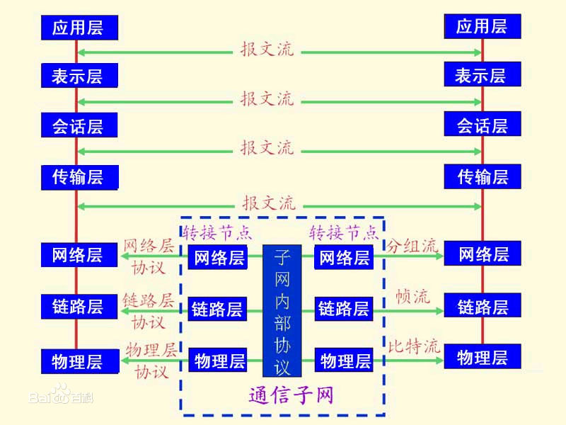
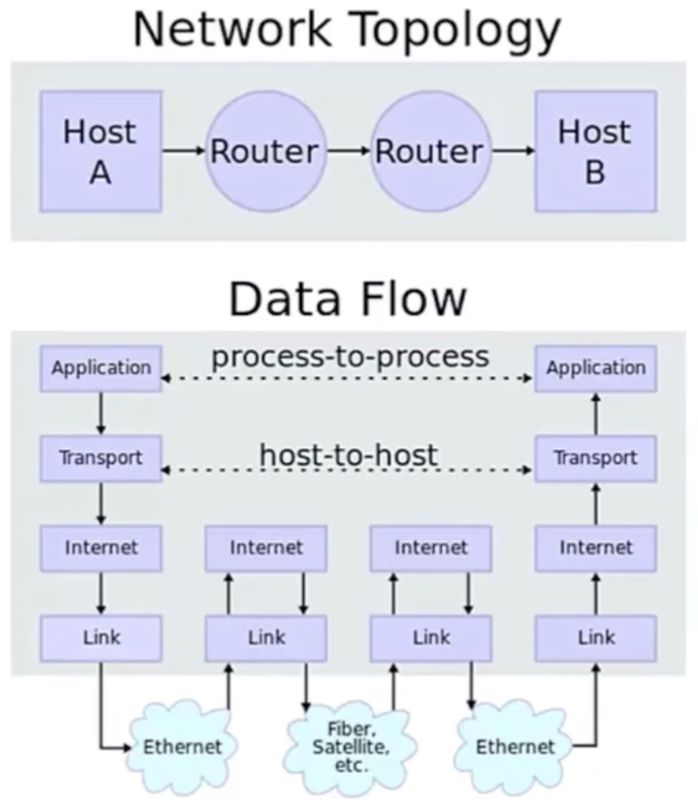
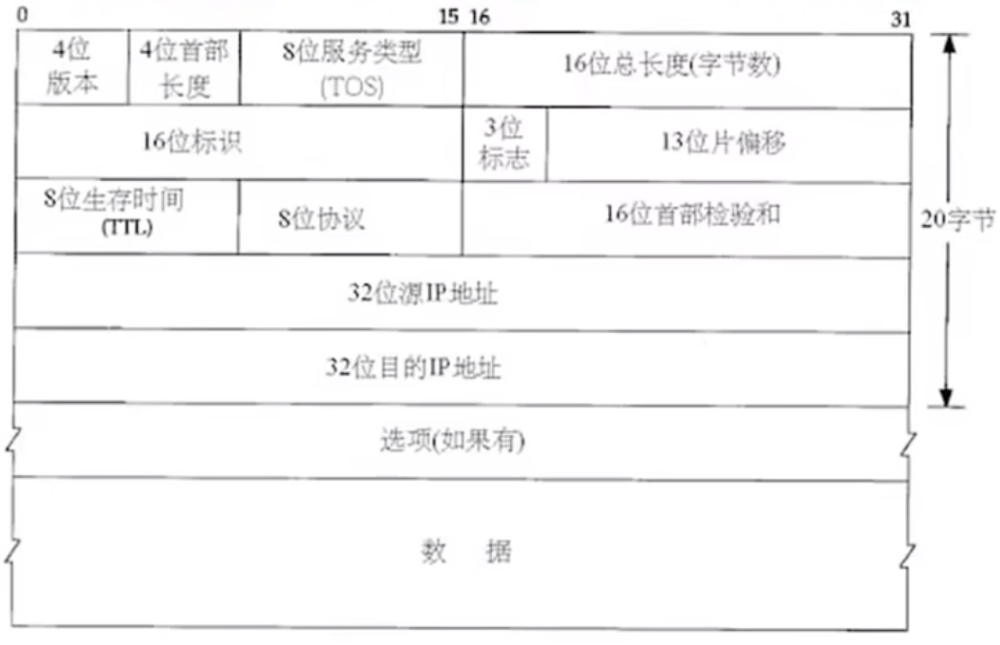

Day 01
效率
开发效率：
C++11 -> auto、lambda、move
同步、异步、多线程、多进程…
运行效率
预备知识
- TCP/IP （网络编程都是此种协议）
- TCP -> 传输控制协议
- IP -> 网际协议
- Socket
- C++
- 指针、引用、地址、循环、函数、类…
- std::shared_ptr、std::thread、std::aync、decltype、std::future、right、reference
- 第三方库
- BOOST
问题：
1 | // 反转链表 |
IP网际协议详解
IP = Internet protocol suite
OSI模型（Open System Interconnection model）

注意: 七个层级，过于复杂。
IP模型

数据进入协议栈的封装

注意: Frame data 长度有要求，最小46字节，不足添0；最大1500个字节。
MTU（最大传输单元），当
传输数据 > MTU时，则在IP层需要拆分成小包。
IP特点
- 不可靠（unreliable）
- 无连接（connectionless）
IP数据报格式首部字段

注意:【小小】 网络数据都是按照Big Endian【大端存储】传送的；家用操作系统都是Littele Endian数据存储。
思考题：
1 | static bool isLittleEndianSystem(){ |